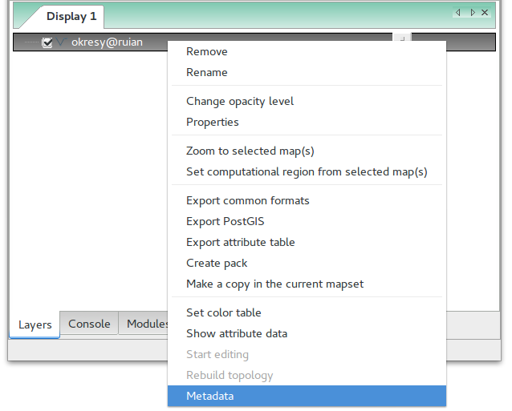
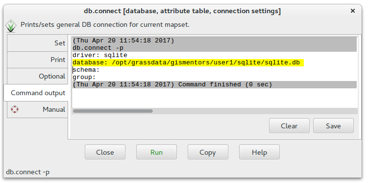

Vektorová data jsou v systému GRASS uložena v podobě
tzv. vektorových map.
Vektorová data reprezentují nejčastěji diskrétní fenomény
Ve 2D GIS rozlišujeme tři základní typy geoprvků, které označujeme
jako jednoduché (simple features):
bodové (point)
liniové (linestring)
plošné (polygon)
Tip
Více o vektorové reprezentace v rámci školení Úvod
do GIS.
Vzhledem k tomu, že je GRASS striktně topologický GIS, tak s
jednoduchými geoprvky nepracuje. Vektorová data ukládá v topologickém
formátu, v případě importu vektorových dat z
běžných GIS formátů jako je např. Esri Shapefile data
převádí do topologické formy automaticky.
Poznámka
Topologie studuje prostorové vztahy mezi objekty (návaznost
linií, sousednost ploch atd.), viz prostorová
topologie.
Vstupní vektorová data často obsahují nejrůznější topologické chyby,
jako např. překrývající se polygony. Importní nástroj systému GRASS
v.import se snaží tyto chyby automaticky opravit. V
některých případech to však není možné a je dále na uživateli, aby
data opravil sám. Opravám případných topologických chyb se věnuje
podrobněji navazující kapitola.
Poznámka
Nativní vektorový formát systému GRASS umožňuje na rozdíl od jiných
formátů jako je např. Esri Shapefile uložit v
jednou souboru (vektorové mapě) rozdílné typy geoprvků vedle
sebe. V jedné vektorové mapě tedy mohou být uloženy bodové, liniové
i plošné geoprvky zároveň, viz kapitola o editaci vektorových
dat.
Základní metadata o vektorové mapě vypisuje modul v.info
dostupný z menu Vector ‣ Reports and statistics ‣
Basic vector metadata anebo z kontextového menu vektorové mapy ve
správci vrstev.

Obr. 48 Spuštění nástroje pro výpis metadat vektorových map z
kontextového menu správce vrsvev.¶
Topologický model systému GRASS liniové a plošné elementy (bodové
geoprvky nejsou součástí topologie) rozkládá dále na tzv. topologické
elementy:
uzel (node),
každá linie či hraniční linie musí začínat a končit v uzlu
linie se musí křížit vždy v uzlu
izolované uzly nejsou podporovány
linie (line),
hraniční linie (boundary) a
reprezentační bod plochy (centroid).
Hraniční linie je liniový element, který na rozdíl od elementu
označovaného jako linie, může tvořit hranici plochy. Plošný
topologický element area je tvořen jednou či více hraničními liniemi
a případně i jedním centroidem. Izolovaná plocha nebo souvislá
množina ploch formuje plošný element označovaný jako ostrov (isle).
Atributová data jsou uložena v libovolném formátu podporovaném jedním
z databázových ovladačů systému GRASS. Ve verzi
GRASS 7.x je výchozím formátem databáze SQLite. Volitelně lze atributová data ukládat do databáze
PostgreSQL, MySQL či
do jiné databáze pomocí rozhraní ODBC.
Poznámka pro GRASS GIS verze 6
Ve verzi GRASS 6 byl výchozím formátem pro atributová data
DBF.
Poznámka
Výchozí nastavení formátu pro uložení atributových dat můžete změnit
pomocí modulu db.connect (Database ‣
Manage databases ‣ Connect). Aktuální nastavení vypisuje přepínač
-p.

Obr. 50 Výchozí nastavení připojení atributových dat v GRASS - databáze
SQLite.¶
Nastavení databáze PostgreSQL pro uložení atributových dat z příkazové řádky
db.connectdriver=pgdatabase=grass
Změna nastavení formátu uložení atributových dat se projeví až u nově
vytvořených vektorových map.
Poznámka pro pokročilé
K jedné vektorové mapě lze přiřadit více atributových tabulek. Tato
problematika je ale nad rámec tohoto školení a je probírána v
navazující školení pro pokročilé uživatele.